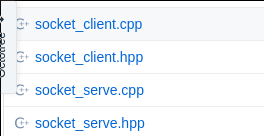
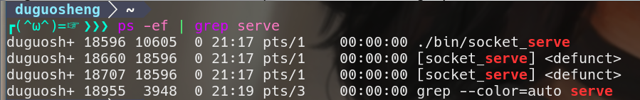

修改自码农有道的博客
并发的概念
在之前介绍socket通信的时候，socket的服务端在同一时间只能和一个客户端通信，并不是服务端有多忙，而是因为单进程的程序在同一时间只能做一件事情，不可能一边等待客户端的新连接，一边与其它的客户端进行通信。
如果把socket服务端改为多进程，在每次accept到一个客户端的连接后，生成一个子进程，让子进程负责和这个客户端通信，父进程继续accept客户端的连接，socket的服务端在监听新客户端的同时，还可以与多个客户端进行通信。这就是并发
并发的应用
具体是下面图中的文件

- 修改socket服务端的代码，如下：
首先，在CTcpServer类中增加两个成员函数，如下：1
2void CloseListen(); //关闭监听套接字
void CloseClient(); //关闭与客户端通信的套接字
具体实现
1 | void CTcpServe::CloseListen(void) |
main函数略做修改，如下：
1
2
3
4
5
6
7
8
9
10
11
12
13
14
15while(true)
{
if(!tcp_serve.Accept())
{
printf("接收客户端的连接失败\n");
return -1;
}
if(fork()>0)
{
tcp_serve.CloseClient(); //关闭父进程中的客户端套接字
continue; //父进程进入下次循环继续监听
}
tcp_serve.CloseListen(); //关闭子进程中的监听套接字
break; //子进程跳出循环进入下面的通信程序
}解释一下：
- 当有客户端连上来的时候，主进程执行fork，这时候会产生两个客户端的socket（m_clientfd被复制了一份），对父进程来说，只负责监听客户端的连接，不需要与客户端通信，所以父进程关闭客户端的socket，即close(m_clientfd)。
- 当有客户端连上来的时候，主进程执行fork，这时候也会产生两个服务端的socket（m_listenfd被复制了一份），对子进程来说，只需要与客户端通信，不需要监听客户端的连接，所以子进程关闭监听的socket，即close(m_listenfd)。
- 子进程执行完任务后，要调用retrun或exit(0)退出，如果没有调用return或exit(0)，子进程将一直存在，直到父进程退出才消失。
僵尸进程
僵尸进程产生的原因
一个子进程在调用return结束自己的生命的时候，其实它并没有真正的被销毁，而是留下一个僵尸进程。
僵尸进程是子进程比父进程先结束，而父进程又没有回收子进程，释放子进程占用的资源。如果父进程先退出，子进程被系统接管，也就是子进程的父进程变为了系统进程，子进程退出后系统会回收其占用的相关资源，不会成为僵尸进程。
先启动服务端程序socket_serve，然后多次启动客户端程序socket_client，查看进程，如下图，有

如果父进程出退出，僵尸进程随之消失。
僵尸进程的危害
僵尸进程在消失之前会继续占用系统资源。
如何解决僵尸进程
解决僵尸进程的方法有两种。
子进程退出之前，会向父进程发送一个信号，父进程调用waid函数等待这个信号，只要等到了，就不会产生僵尸进程。这话说得容易，因为在并发的服务端程序中这是不可能的，因为父进程要做其它的事，例如等待客户端的新连接，不可能去等待子进程的退出信号。所以这种方法我就不介绍了。
另一种方法就是父进程直接忽略子进程的信号，具体做法很简单，在主程序中增加以下代码：
1
2
3
4
5
6
7int main()
{
//忽略子进程的信号，避免成为僵尸进程
signal(SIGCHLD, SIG_IGN);
...
...
}
signal库函数的用法暂时不介绍，以后有详细说明。
应用经验
在学习了多进程的基础知识之后，初学者可能会认为多进程是一个高大上的技术，认为多进程处理数据肯定比单进程快，其实不是。在实际开发中，采用多进程的主要目的是处理多个并发的任务，而不是为了提高程序的效率。
从效率方面来说，多进程的效率比单进程要低，原因很简单，因为在有限的硬件资源中，多进程的内存开销更大，还会产生资源锁和竞争。
就像多个人端着一盆水，不如一个人端着一盆水走得快。